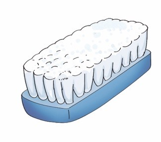
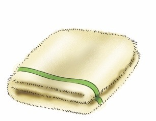
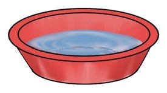
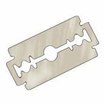
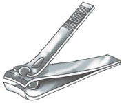
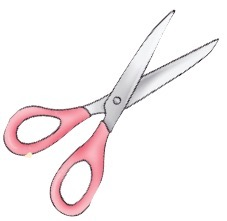
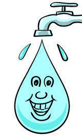
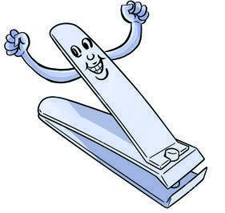

Page 16
I wash my hands and cut fingernails.

I use these items to wash my hands and cut my fingernails.








Question
Name the items used for washing hands and cutting
fingernails presented in pictures 1- 5.
Activity 6
Boast about the items for washing hands and cutting fingernails
by mentioning their uses.
I am water, use me to clean hands and fingernails.

I am a nail cutter. I am not a friend of long nails; I cut them.
